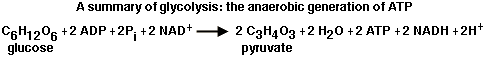

Metabolism Problem SetProblem 2 Tutorial: Products of GlycolysisAt the end of glycolysis, each molecule of glucose has yielded 2 molecules of _______, 2 molecules of ________, and a net of 2 molecules of _________. Molecules converted in glycolysisGlycolysis is a series of 10 reactions requiring two molecules of ATP to convert glucose to activated intermediates, followed by cleavage and conversions to two molecules of pyruvate. The summary below of glycolysis shows that the process produces two molecules of NADH and four molecules of ATP for a net yield of 2 ATP.  |